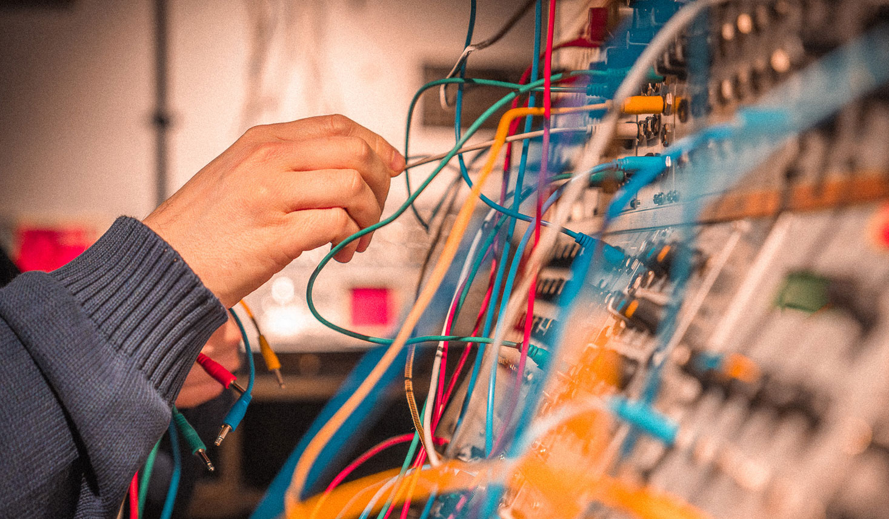
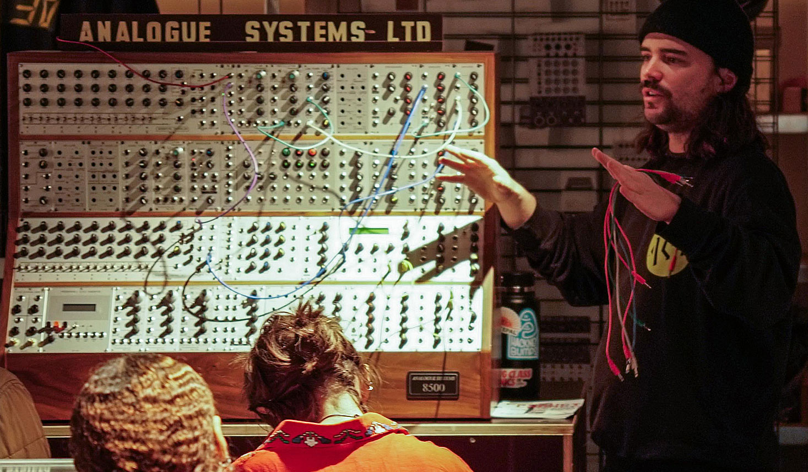
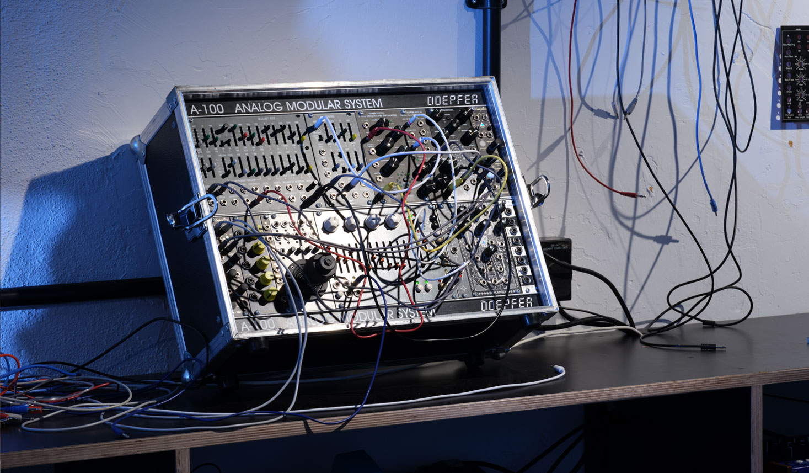
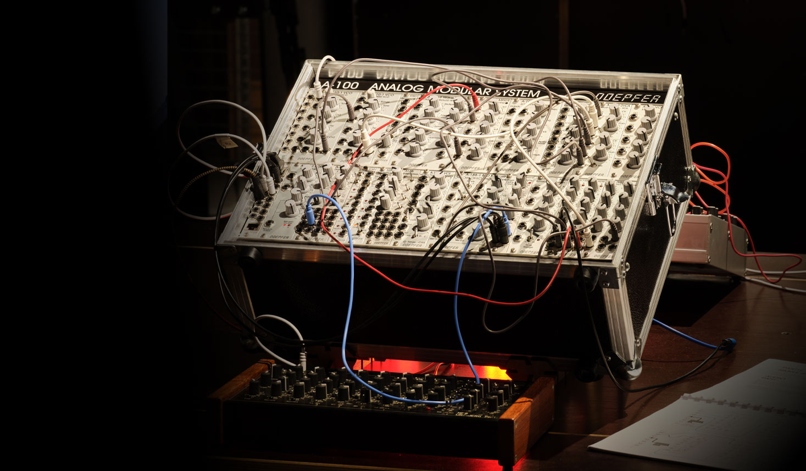

This course focuses on outcomes rather than a technical syllabus. By the end, you will understand both how to build sounds and why synthesis works, which sets you up to explore with purpose.


4x 2HR SessionsEquipment Provided8 People Per Class
Price £299
As well as being a guitarist and pianist, he is a synthesis enthusiast with a particular interest in sampling and sound manipulation.